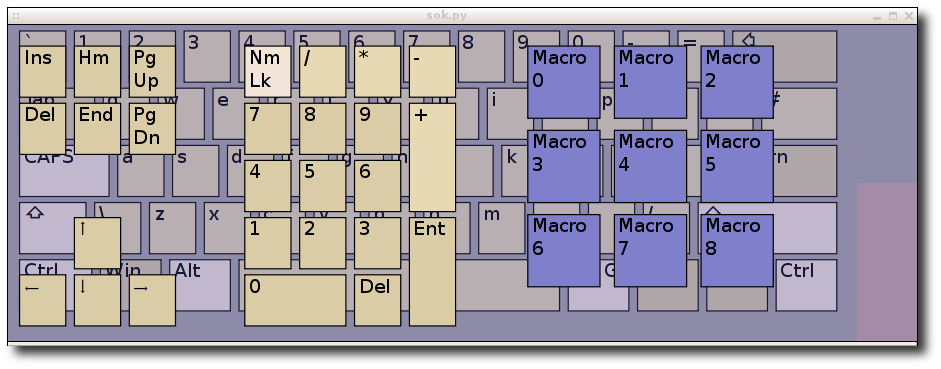

Onboard - Documentation
Onboard is an on-screen keyboard currently aimed at users using a pointing device
such as a mouse or head mouse. It also has very basic scanning support.
It is designed to work with zero configuration for as many users as possible.
Other features include:
-
Comprehensive language support.
-
Macros, phrases or sentences assigned to a key.
-
Keyboard layouts that are easy to create and modify.
-
Keys can perform an action such as switching mouse buttons.
-
Re-sizable so that you can make best use of your screen.

Using Onboard
How to use the onscreen keyboard. Including selecting layouts.
Creating and selecting macros and use of the scanning mode.
Designing/Personalising layouts
How to create a layout from scratch or customise an existing layout.